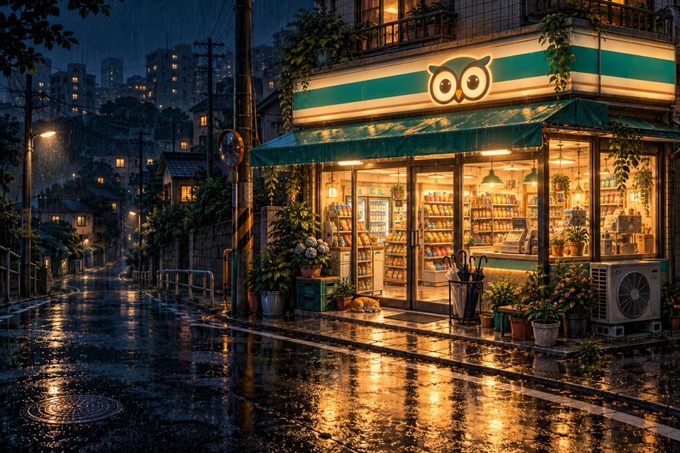

A digital product studio
작은 아이디어를,일상의 쓸모로.
기술을 심고, 매일 쓰는 서비스를 가꿉니다.
Digital Farmers는 더 나은 하루를 키우는 작은 팀입니다.
좋은 서비스는 작은 질문에서 시작됩니다. 우리는 그 질문을 하루의 쓸모로 키웁니다.
Made for your everyday
우리가 키우고 있는 서비스

설치 없이, 지금 바로 한 판
DF 오락실
브라우저에서 바로 즐기는 웹게임도 만듭니다.
「올빼미 편의점」과 「수달 목욕탕」을 시작으로 계속 늘려 갈게요.

The way we grow
씨앗에서 수확까지,
세 단계로 가꿉니다.
- 01 · 발견
일상에서 발견하고
무심코 지나쳤던 불편함과 작은 즐거움에 귀를 기울입니다.
- 02 · 시작
가볍게 시작하고
아이디어를 직접 써볼 수 있는 경험으로 빠르게 옮깁니다.
- 03 · 성장
꾸준히 가꿉니다
실제로 쓰는 사람들의 목소리로 조금씩 더 쓸모 있게 만듭니다.
Play
디지털 파머답게,
농사로 소개합니다.
밭에서 당근을 쑥 뽑으면 우리가 키운 서비스가 나와요.
농장으로 가기다음 아이디어의 시작